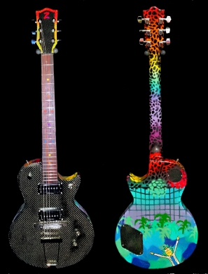

Zwack Z4 “Phase Two – Multiverse”
UNPLUGGED ALMOST AS LOUD AS A SMALL STEEL-STRING, AMPLIFIED A MONSTER! RESOLVES THE MOST COMPLICATED CHORDS CRYSTAL CLEAR, IN ALL REGISTERS, EVEN IN HIGH-GAIN. VERY HARMONIC, NATURAL, WOODY OVERTONES, SUPERIOUR RESPONSE, ATTACK AND ARTICULATION, INSANE POWER.
- ONE-PIECE, NECK-THROUGH HOLLOW-BODY MADE FROM
ZWACKZEUG (MOSTLY CARBON-FIBRE)
- ZWACKZEUG TOP
- MODERN LP-SHAPE NECK
- ROSEWOOD FRETBOARD
- ZWACK COLOUR-DOTS
- 22 SLIM-JUMBO FRETS
- 2X SEYMOUR DUNCAN P-RAIL HUMBUCKER
- SPLITABLE FOR SINGLE-COIL, P90 AND HUMBUCKER-MADNESS
- 2 TONE-POTIS PUSH/PUSH FOR VARIOUS SPLIT-SOUNDS
- 3-WAY PICKUP-SELECTOR
- 1 VOLUME POTI
- KLUSON LOCKING TUNERS
- GRAPHTECH BLACK TUSQ XL NUT
- GOTOH TUNAMATIC BRIDGE
- VINTAGE TAIL-PIECE
- SCHALLER SECURITY-LOCK PINS
- RICK AND MORTY TRIBUTE DESIGN
- 2,5 Kg